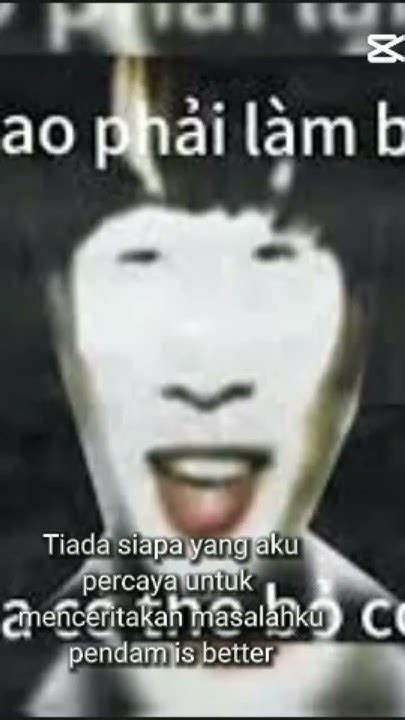
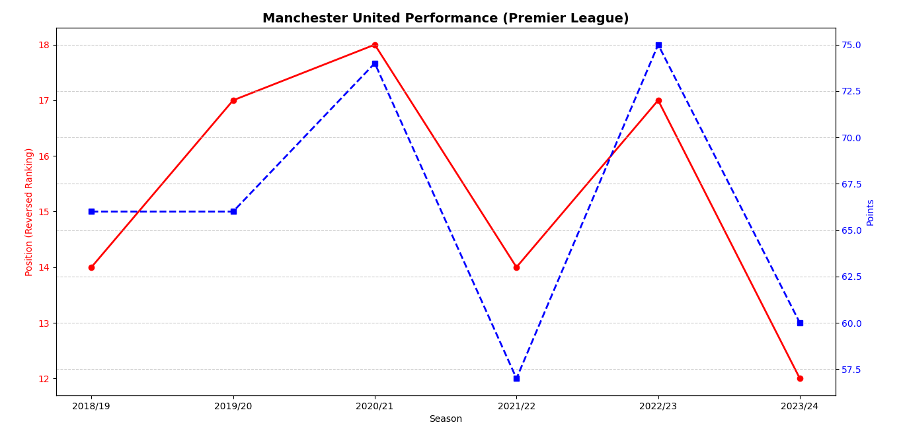

MU gần đây thế nào?
Anh Bòi của lớp 7E trường THCS QB chúng ta luôn tự hào về Manchester United. Nhưng gần đây, MU đã:
- Thua nhiều trận quan trọng.
- Vị trí đứng "đáy xã hội" tại giải Ngoại hạng Anh.
- Luôn khiến người hâm mộ buồn lòng.
Chân dung anh Bòi
Đây là gương mặt của anh Bòi sau trận MU bị thua thảm 0-7.
Thành tích gần đây của MU
Biểu đồ thể hiện phong độ của MU trong các mùa giải gần đây...